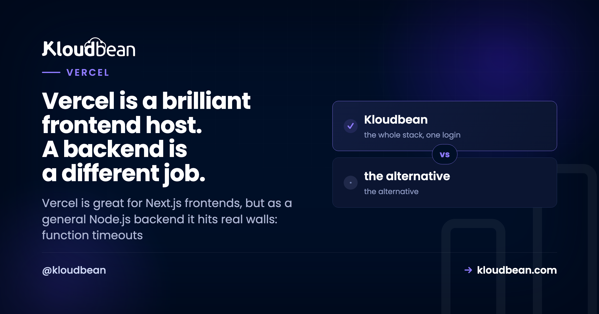

Vercel for Node.js Backends: The Limits That Actually Bite

Vercel is excellent at what it was built for: shipping Next.js frontends, previews, and request-driven APIs. The friction shows up when you push a full Node.js backend onto it. Long jobs, WebSockets, background workers, heavy database use, these run into the serverless model rather than working with it. None of this makes Vercel bad. It's an architectural mismatch, and knowing exactly where the walls are saves you a rewrite. Here are the limits that actually bite, with the current numbers, not the old ones everyone still quotes.
You can, but Vercel runs it as serverless functions, not a persistent Node process. That brings execution-duration limits (currently around 300 seconds by default, up to 800 or an extended 1,800 on Pro with Fluid Compute, per Vercel's docs, not the old 10 seconds), cold starts after idle, no durable long-running workers, WebSockets only within function limits, and usage-based bills that combine several meters. For a persistent API, worker, or WebSocket backend, a real always-on server is the better fit.
How Vercel runs your backend (and why it matters)
The core thing to internalize: on Vercel your backend code runs as functions that spin up to handle a request and then go away. There's no long-lived Node process sitting there holding connections, in-memory state, or a running job queue. For a stateless API endpoint that reads a row and returns JSON, that's great and it scales beautifully. For anything that needs to run for a while, remember something between requests, or hold an open connection, the model itself is the constraint. Every limit below flows from that one design fact.
The execution-duration limit
This is the classic one, and it's also the most out-of-date in people's heads. Old Vercel plans capped functions at roughly 10 seconds on Hobby and 60 on Pro, and those numbers are burned into thousands of tutorials and Stack Overflow answers. They're historical. Per Vercel's current limitations docs, functions default to around 300 seconds, and Pro can go up to 800 seconds, with an extended maximum near 1,800 for supported Fluid Compute configurations. You can raise a function's ceiling in config:
// vercel.json
{
"functions": {
"api/*.js": { "maxDuration": 300 }
}
}Better, yes. Solved, no. A hard ceiling still exists, and plenty of real work brushes against it: slow third-party or AI API calls, PDF and report generation, image or video processing, large CSV or database exports, scraping, data migrations, multi-step fulfillment. When one of those runs long, the function is killed mid-execution and the user gets a 504. The usual reported fix is to re-architect: stream a partial response, split the work, or push it to a queue or external worker. That's real engineering effort spent working around the platform.
Cold starts after idle
When traffic drops and a function goes cold, the next request has to initialize a fresh instance, which adds latency, worst on low-traffic APIs, big dependency trees, and functions that spin up database clients or AI SDKs. Vercel has genuinely improved this with Fluid Compute and reports that 99.37% of requests see zero cold starts on its own workload. Fair to note, and also worth reading precisely: that's Vercel's own reported platform statistic, not an independent benchmark, and "99.37% of requests" is not the same as "your low-traffic endpoint never cold-starts." A cold start can also eat into the duration budget above, turning a borderline request into a timeout.
Long-running and background jobs
Fire-and-forget work is the shakiest fit. Because the function can be torn down after it returns a response or hits its max duration, "kick off a job and move on" isn't safe by default. Vercel's Fluid Compute adds background processing (the waitUntil() style), but that work is still bound by function limits and still metered, and it isn't a durable queue with retries and dead-letter handling. Developers consistently land on the same answer: for real background jobs you reach for an external system, Inngest, Trigger.dev, QStash, a cloud queue, or a plain worker process with BullMQ and Redis. Which means your "backend on Vercel" is now Vercel plus another service to run and pay for.
WebSockets and persistent connections
Here's where accuracy matters, because the old blanket claim is wrong now. It used to be true that you simply couldn't run WebSockets on Vercel. Today Vercel's docs support WebSocket connections through Functions with Fluid Compute. So the honest version isn't "impossible," it's "possible, with strings attached." Connections still follow function duration and pricing limits, clients need to handle reconnects when a connection closes, and shared state like rooms, presence, and pub/sub has to live in an external store rather than in process memory. For a chat app, a multiplayer feature, or a live dashboard, that's a meaningfully more complex and more expensive setup than a single persistent Node process running ws or Socket.IO with a Redis adapter.
The bill is hard to forecast
Serverless billing on Vercel isn't one number. It combines function invocations, active CPU, provisioned memory, fast data transfer, fast origin transfer, edge requests, and build minutes. That's manageable for a predictable frontend and unnerving for a backend whose traffic you don't fully control. The failure mode people describe is a spike they didn't cause: one developer reported an unexpected bill of $1,141.89, most of it fast data transfer plus edge requests; others describe bot traffic hammering public API endpoints over a weekend. To be fair, Vercel offers spend management and usage dashboards, but spend management is opt-in for Pro teams, so it protects you only if you turned it on before the spike. The core issue isn't villainy, it's that backend usage combines several meters and bots don't ask permission.
Database connections under serverless
One more that bites quietly. Each function instance can open its own database connection, so a burst of invocations can open a burst of connections and exhaust your database's limit, classic pain for Postgres, MySQL, and MongoDB, and for ORMs like Prisma, Sequelize, Mongoose, Drizzle, and TypeORM that assumed a long-lived process. The workarounds are serverless-aware drivers, a pooling proxy, or hosted adapters, all of which are more moving parts. A persistent server sidesteps the whole issue because it holds a stable pool.
| Vercel (serverless functions) | Persistent server (Kloudbean) | |
|---|---|---|
| Process model | Spins up per request | Always-on Node under PM2 |
| Long jobs | Duration-capped, re-architect | Run as long as needed |
| Background workers | External queue needed | Worker + managed Redis, same dashboard |
| WebSockets | Within function limits + external state | Native on a persistent process |
| DB connections | Pool exhaustion under bursts | Stable pool from one process |
| Cost shape | Several meters, transfer-sensitive | Flat from $8/mo, no egress metering |
When to use a real server instead
Simple rule of thumb: if your backend needs to run long, remember things between requests, hold open connections, or process durable jobs, it wants a persistent server. On Kloudbean your Node app runs always-on under PM2, so there's no duration ceiling on your own request handling, no cold start on the first hit, and no re-architecting jobs around a timeout. Background workers run beside the app with managed Redis for BullMQ, WebSockets run on a real process, and a managed database sits in the same dashboard so connections come from a stable pool. Pricing is flat from $8/mo with no egress metering, so bot traffic doesn't turn into a surprise invoice. If the workload in question is an API rather than a whole app, the narrower question of serverless functions or a persistent server turns almost entirely on how long your handlers run and how much state they hold.
The genuinely fair part: if you love Vercel for your Next.js frontend, keep it there. It's very good at that. The clean split a lot of teams land on is frontend on Vercel, backend on a persistent server, connected over HTTPS. You don't have to pick one home for everything.

How it fits the rest of your stack
Moving a backend off serverless is mostly about the model, not the language. See a Vercel alternative for full-stack apps for the split, the best Vercel alternative for databases for the data side, and database connection pooling for why a persistent process helps. To place it against everything else, read where to deploy a Node.js app and the framework-specific deploy an Express app guide.
Give your backend a persistent home.
Run an always-on Node.js backend under PM2 with real background workers, WebSockets, managed Redis, and a managed database in one dashboard, on flat pricing from $8/mo with no egress metering. Keep your frontend wherever you like. Start at kloudbean.com, see plans on pricing.
Always-on Node · Workers + queues · WebSockets on a real process · Managed database · Flat from $8/mo · No egress metering
FAQ
Can you run a Node.js backend on Vercel?
Yes, but as serverless functions rather than a persistent process. Short, stateless APIs work well. Backends that need long-running jobs, durable queues, WebSockets, or heavy database connections run into the serverless model and usually need extra architecture or a different host. It's an architectural fit question, not a matter of whether it technically runs.
What's Vercel's function timeout?
Per Vercel's current docs, functions default to around 300 seconds, and Pro can reach up to 800 seconds with an extended maximum near 1,800 for supported Fluid Compute configurations. The old 10-second Hobby and 60-second Pro limits are historical but still quoted everywhere. A hard ceiling still exists, so genuinely long work needs a queue or a persistent server.
Does Vercel support WebSockets now?
Yes, with limits. Vercel's current docs support WebSocket connections through Functions with Fluid Compute, but they follow function duration and pricing rules, clients must handle reconnects, and shared state like rooms and presence needs an external store. It's more complex and often costlier than running ws or Socket.IO on a single persistent Node process.
Why did I get a large Vercel bill?
Usually because backend usage combines several meters, invocations, active CPU, provisioned memory, fast data transfer, fast origin transfer, and edge requests, and something spiked. One developer reported a $1,141.89 bill dominated by data transfer, and bot traffic hitting public endpoints is a common trigger. Vercel offers spend management, but it's opt-in for Pro, so enable it before you need it.
Does Vercel have cold starts?
It can, when a function goes idle and the next request initializes a new instance. Fluid Compute has reduced this, and Vercel reports 99.37% of requests see zero cold starts on its own workload, though that's a vendor statistic, not an independent benchmark, and low-traffic endpoints are the most exposed. An always-on server avoids the question entirely.
Should I move my API off Vercel?
Move it if you're fighting timeouts, need durable background jobs or WebSockets, or your database connections are exhausting under bursts. A common, clean setup is keeping the Next.js frontend on Vercel and running the backend on a persistent server like Kloudbean, connected over HTTPS. If your API is short and stateless, staying on Vercel is perfectly reasonable.